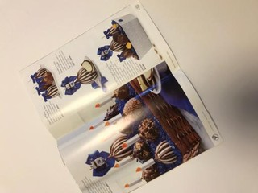

1Datakwaliteit en bias
Test het in het labHoe het kijkt
Van foto naar oordeel in vier stappen. Dit is DABI 1.2, live op jouw foto.
-
1 Foto
Wat jij ziet.
2 Verkleind tot 128 × 128 pixels, en dan alleen getallen
Beweeg of tik op het beeld.
Ingezoomd: 7 × 7 pixels rond je cursor.
Eerst wordt je foto verkleind tot de korte kant 128 pixels is, en wordt het midden uitgesneden: wat daarbuiten valt, ziet het model niet. Elke pixel is dan 3 getallen: hoeveel rood, groen en blauw (0 = niets, 255 = vol). 128 × 128 × 3 = 49.152 getallen. Die worden rond 0 geschaald (min het gemiddelde, gedeeld door de spreiding), en daar schuiven de filters van stap 3 overheen. Meer krijgt het model niet: geen "fles" of "blik", alleen deze getallen.
-
3 Laag 1: 32 filters
Elk filter is een raampje van 3 × 3 pixels dat over de foto schuift en één patroon zoekt, zoals een rand of een kleurovergang. Het model leerde ze zelf. Hoe lichter de kaart, hoe sterker het filter daar reageert. Klik op een kaart.
-
4 Oordeel
Na laag 1 volgen nog vier lagen filters op steeds kleinere versies van het beeld. Daarna worden het vijf percentages, één per materiaal, en het hoogste wint. In het spel tellen plastic en metaal samen op tot PMD.
Alles wat het zag
2.527 foto's uit TrashNet. Eén vakje is één foto. Allemaal op wit papier, één voorwerp, iPhone.
Zo leerde het
Validatiefoto's goed, per trainingsronde. Beide DABI-versies begonnen leeg; MobileNet kende al 1,2 miljoen andere foto's.
Resultaten
380 foto's die geen van de drie modellen eerder zag. Eén vakje per foto, gesorteerd per soort.
MobileNet begon met gewichten van 1,2 miljoen ImageNet-foto's en is daarna op dezelfde 1.768 afvalfoto's bijgetraind. DABI begon leeg. Het verschil komt dus grotendeels van die voorsprong, niet van een slimmer ontwerp.
goed (kleur van de soort)
fout
fout én minstens 80% zeker
Hoe vaak goed, per soort
Van alle testfoto's van een soort: welk deel herkende elk model?
Waar gaat het mis?
De vier keer dat een soort het vaakst voor een andere soort werd aangezien.
Alle cijfers per soort
DABI 1.1 vs DABI 1.2
Dezelfde 380 testfoto's. DABI 1.2 kreeg een vijfde laag filters en leerde met willekeurig weggevlakte stukjes, zodat het niet op één glimplek of etiket leunt. Wat dat opleverde, en wat het kostte:
Breek het
Echt afval ligt niet op wit papier. Draai aan de knoppen.
Gemeten op alle 380 testfoto's

AI bakte hier niks van
Responsible AI
Hoe dit project verantwoord met AI omgaat: per principe wat er gevonden is, en wat eraan gedaan is.
2Betrouwbaarheid
Daarom toont deze site altijd alle vijf percentages, niet alleen het winnende label, en zet overtuigde fouten apart, in rood.
Bekijk de overtuigde fouten3Transparantie
49.152 → 5
Een neuraal netwerk legt niet uit waaróm het kiest.
Daarom laat deze site elke stap zien, live op jouw foto: de pixels, de 32 echte filters met hun gewichten, en de vijf percentages.
Kijk mee in het model4Privacy
0 foto's verstuurd
Een foto van thuis kan meer laten zien dan alleen afval.
Daarom draait het model in je browser. Er is geen server die je foto ziet of bewaart.
Test je eigen afval5Menselijke controle
Jij eerst.
Een AI-antwoord kan je eigen oordeel sturen, ook als het fout is.
Daarom kies je in het spel eerst zelf, voordat je de AI ziet. De site neemt nooit zelf een besluit en zegt erbij dat het een lesvoorbeeld is, geen afvalwijzer.
Speel tegen de AI6Duurzaamheid
Zie hoe het leerdeMeer weten
De basis
Wat is een CNN?
Een convolutioneel neuraal netwerk: een model dat een foto bekijkt met kleine filters van 3 × 3 pixels die eroverheen schuiven. De eerste laag vindt randen en kleurovergangen, latere lagen combineren die tot vormen en structuren, zoals glans of een etiket. Aan het eind komen er vijf percentages uit, één per bak. Niemand programmeert die filters: het model leert ze zelf uit voorbeelden. In "Hoe het kijkt" zie je de echte filters van de eerste laag.
Wat is DABI?
DABI staat voor Does AI Bin It: het CNN van dit project, vanaf nul getraind op alleen de 1.768 trainingsfoto's. DABI 1.1 heeft vier lagen filters en zo'n 390.000 getallen om te leren. DABI 1.2 heeft vijf lagen, zo'n 980.000 getallen, en leerde met willekeurig weggevlakte stukjes. DABI 1.2 is het model in "Hoe het kijkt" en het lab.
Wat is MobileNet, en waarom is het beter?
MobileNetV3-Small is een bekend klein beeldmodel van Google, gemaakt om op telefoons te draaien. Het is vooraf getraind op ImageNet: 1,2 miljoen foto's in 1.000 categorieën, van honden tot auto's. Voor dit project is de laatste laag vervangen door de vijf materialen, en is het hele model 15 rondes bijgetraind op dezelfde afvalfoto's als DABI, met dezelfde instellingen. Het begint dus met een grote voorsprong: het weet al hoe randen, glans en vormen eruitzien. Daarom staat het hier ter vergelijking, niet als tegenstander op gelijke voet.
Wat is het verschil tussen leren, kiezen en toetsen?
De 2.527 foto's zijn één keer vast verdeeld. Van 1.768 foto's leert het model. Met 379 foto's worden keuzes gemaakt, zoals welke trainingsronde de beste is. De laatste 380 worden pas aan het eind gebruikt, één keer per model: daar komen alle scores op deze pagina vandaan. Zo meet je hoe het model het doet op foto's die het echt nog nooit zag.
Waarom het misgaat
Waarom ziet het plastic zo vaak aan voor glas?
Allebei kunnen doorzichtig zijn, glanzen en de vorm van een fles hebben. Het verschil zit in details: hoe dik de wand is, hoe het licht erdoor breekt, de schroefdraad. Op 128 × 128 pixels blijft daar weinig van over, zeker als het voorwerp klein in beeld is. En doorzichtige plastic bakjes en eierdozen zitten amper in de trainingsfoto's. DABI 1.1 zag 12 van de 73 plastic testfoto's aan voor glas, DABI 1.2 8 en MobileNet 4. Een vijfde laag filters en het wegvlakken van stukjes hielpen dus, maar losten het niet op.
Waarom is restafval het moeilijkst?
Er zijn maar 137 foto's van, tegen 997 van papier en karton. Fouten op restafval telden bij het trainen zwaarder mee, maar meer voorbeelden is daar geen vervanging voor.
Waarom gaat het mis bij ander licht, een wazige foto of een donkere tafel?
Alle trainingsfoto's zijn op wit papier genomen, in vergelijkbaar licht. Het model heeft dus nooit geleerd dat de achtergrond en de belichting er niet toe doen. Op de testfoto's zoals ze zijn, heeft DABI 1.2 79% goed. Met half zoveel licht zakt dat naar 56%, iets wazig (straal 4) naar 56%, en op een donkere tafel (foto op 75%) naar 60%. Probeer het zelf in het lab.
Wat als iets uit meerdere materialen bestaat?
Het model geeft één soort voor de hele foto. Wat het grootst in beeld is of het meest opvalt, wint. Een gewatteerde envelop is papier met plastic noppen, en alle drie de modellen zeiden papier en karton. Een blik met een papieren etiket noemden beide DABI's plastic, en MobileNet glas. In het echt haal je zulke dingen uit elkaar, of kijk je in de afvalwijzer.
Waarom is het zo zeker als het fout zit?
De vijf percentages tellen altijd op tot 100%: het model moet kiezen en kan geen "weet ik niet" zeggen. Het leerde alleen om het juiste antwoord zo hoog mogelijk te zetten, niet om eerlijk te zijn over twijfel. Bij een foto die op niets lijkt wat het kent, kan het dus net zo stellig zijn als bij een makkelijke. Daarom laat deze site altijd alle vijf percentages zien.
Goed om te weten
Op welk afvalsysteem is dit gebaseerd?
Op het Nederlandse. Het spel heeft vier bakken: papier en karton, glas, PMD (plastic, metaal en drinkpakken) en restafval, in de officiële kleuren en met de namen van Rijkswaterstaat. Die zijn opgesteld zodat afvalscheiding er overal in Nederland hetzelfde uitziet. Wat er precies in welke bak mag, verschilt wel per gemeente: sommige halen plastic achteraf uit het restafval, andere hebben aparte bakken. GFT (groente, fruit en tuinafval) zit er nog niet in, want in de foto's waarvan het model leerde, staan geen etensresten.
Waarom heeft metaal een andere kleur dan in het spel?
In het spel gaan plastic en metaal samen in de oranje PMD-bak, zoals in de meeste gemeenten. In deze uitleg tellen we per materiaal, om te laten zien wat het model echt herkent: dan moet je plastic en metaal uit elkaar kunnen houden. Metaal heeft geen eigen officiële kleur, want blik hoort bij PMD. Daarom is metaal hier roze, een kleur die in de officiële set van Rijkswaterstaat niet voorkomt, zodat niemand denkt dat er een roze bak bestaat. Alle andere kleuren zijn de officiële.
Vijf soorten, vier bakken?
Het model herkent vijf materialen: papier en karton, glas, plastic, metaal en restafval. Maar in de meeste gemeenten gaan plastic, metaal (blik) en drinkpakken samen in de PMD-bak. Daarom heeft het spel vier bakken: kiest een model plastic of metaal, dan is dat PMD, en hoe zeker het van PMD is, is de som van die twee percentages. Elders haalt de verwerker plastic achteraf uit het restafval, en een gebruikte tissue is papier maar hoort bij het restafval. GFT, batterijen of elektronica kent het model niet eens: het kiest altijd een van de vijf materialen. De kleuren zijn de officiële kleuren van Rijkswaterstaat. Twijfel je, kijk dan in de afvalwijzer van je gemeente. In deze uitleg zie je wat het model echt herkent, per materiaal: zet het metaal bij plastic, dan telt dat hier als fout. In het spel telt alleen de bak, en dan is het goed.
Rekent je browser hetzelfde als Python?
Wordt gecontroleerd zodra de modellen geladen zijn…
Waarom het gemaakt is
Een persoonlijk project. De vraag: hoe goed herkent een model dat vanaf nul getraind is afval, en vooral, waar gaat het mis?
Zo is het gemaakt
- Data2.527 foto's uit TrashNet, papier en karton samengevoegd tot vijf soorten, en vast verdeeld: 70% om van te leren, 15% om instellingen te kiezen, 15% om te toetsen.
- TrainenDABI (Does AI Bin It), een compact CNN, vanaf nul getraind in PyTorch. DABI 1.1 heeft vier lagen filters; DABI 1.2 vijf, en leerde met weggevlakte stukjes. Ter vergelijking een voorgetraind MobileNet, dat ImageNet al kende, kort bijgetraind op dezelfde foto's.
- ToetsenElke score op deze pagina is gemeten op 380 testfoto's die geen van de modellen eerder zag.
- In je browserAlle drie de modellen omgezet naar ONNX en uitgevoerd met ONNX Runtime Web, met tot op de pixel dezelfde voorbewerking als in Python.